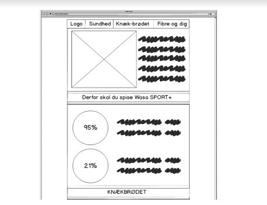
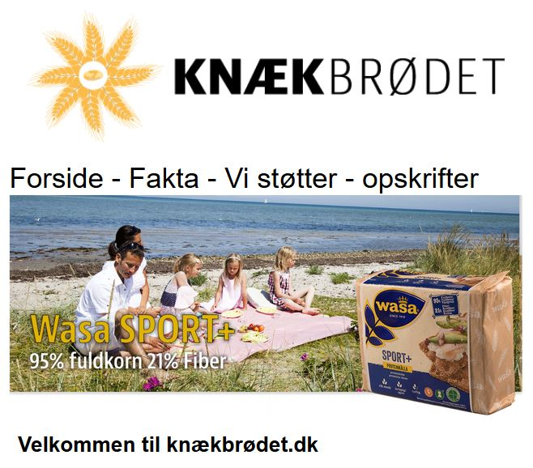
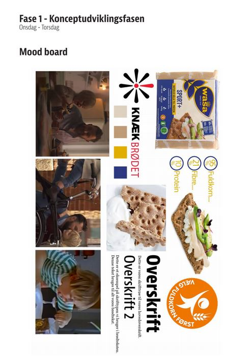
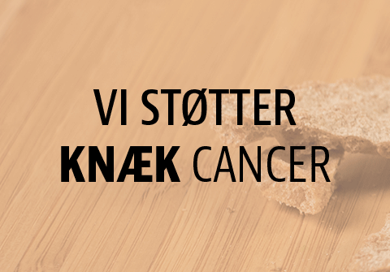
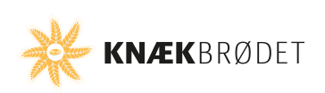

OnePage projektet
Vi havde et projekt, hvor vi skulle udarbejde en OnePage ud fra et produkt som vi fik udleveret. Vi fik udleveret WASA Sport + knækbrød
Igangsættelse
Vi startede med, at skulle oprette en gruppekontrakt, hvor vores aftaler var i.
Vi begyndte herefter at brainstorme over ideerne til hvordan vi kunne præsentere produktet. Vi brugte Minervamodellen for at finde ud af hvor vores målgruppe lå. Derefter lavede vi et spørgeskema, som vi delte rundt på nettet igennem Facebook og mail, for at få vores antagelser bekræftet omkring målgruppen.
For yderligere at være sikker på vores research, valgte vi at bruge brugercentreret metode, ved at vi tog ned i byen for at udspørge folk på gaden omkring fibre og knækbrød. Ud fra folks besvarelser fik vi nogle problemstillinger, som vi dannede User Stories ud fra.
Vores brainstorming over ideerne brugte vi til at udarbejde en feature/unfeature list. Den indeholdte de features vi ville have med på hjemmesiden, samt dem vi kunne undvære eller vente med. Vi udarbejdede også et indholdshieraki, hvor vi prioriterede vores forskellige elementer på siden, i den rigtige rækkefølge.
I Idéudviklingsfasen udarbejdede vi et moodboard, som indeholdt valg af typografi, farver m.m.
Efter dette udarbejdede vi nogle wireframes/skitser af de forskellige skærmstørrelser i Balsamiq, som vi gerne vil designe vores OnePage side til. Vi udarbejdede wireframes til mobil, desktop og desktop. Vi ville sikre at siden kunne ses på forskellige enheder og brugeroplevelsen var god. Vores wireframes blev derefter præsenteret for lærerne.
Designfasen
Her begyndte vi, at designe webdesignet i Photoshop ud fra de wireframes vi havde udarbejdet. Vi lavede et design ud fra hver skærmstørrelse og præsenterede designet for klassen og underviserne.
Produktfotografering
Vi havde bestemt, at vi gerne vil lave opskrifter på hjemmesiden i form af billeder og tekst. Derfor tog vi ned i byen og handlede lidt ind, hvorefter vi lavede knækbrød med pålæg og pynt, som vi tog billeder af. Det var vigtigt for os at tage nogle gode billeder og at det fremstod som et ”lækkert alternativ”, som virkede inspirerende for vores målgruppe. Billederne blev taget på et lysbord, hvorefter vi redigerede dem i Photoshop.
Gennem forløbet
Vi skulle i løbet af projektet printe vores idéer ud, som vi bagefter satte op på en væg. Det er en god idé at gøre, da det giver et godt overblik over ens projekt. Vi brugte programmet Trello, som er et Scrum board, der hjælper til at organiserer ens indhold. I anden uge i projektet begyndte vi på implementeringsprocessen, hvor vi skulle implementere vores Photoshop design, ved hjælp af HTML og CSS. Siden skulle udarbejdes ved brug af semantiske tags og responsive teknikker. Herefter skulle vi optimere vores grafiske materiale til webbrug, ved at gemme billederne med ”save for web” funktionen i Photoshop. Det gjorde at filstørrelsen på billederne ikke var så tunge at loade.
Validering
Under hele forløbet skulle vi validere vores HTML og CSS med WC3 Validator. Det skulle man gøre for at sikre sig for fejl i koden. Vi oplevede dog fejl grundet vi ikke validerede ofte nok.
Versionstyring
Under hele forløbet skulle vi udvikle under et Github-repository og vi skulle comitte mindst en gang dagligt.
Scrum
Projektet skulle udvikles med anvendelse af projektudviklingsmetoden SCRUM. VI valgte at bruge Trello som er et online værktøj som bruges som et Scrum-board.
Projektet blev inddelt i følgende sprint:
- Sprint 1 - Analyse og konceptudviklingsfaserne (mandag – onsdag i første uge)
- Sprint 2. Designfasen (Torsdag – Fredag i første uge)
- Sprint 3. Udviklingsfasen (Mandag til fredag i anden uge)
Klik på på billedet for at se vores OnePage
Reflektion over projektet
Jeg synes at dette projekt har været meget lærerigt og spændende at arbejde med. Jeg har personligt fået rigtig meget ud af, at arbejde med de forskellige faser i projektet. Jeg synes at designfasen var alt for lang og vi kunne godt have brugt mere tid på udviklingsfasen, da vi måske gik meget op i design. Vi tænkte ikke så meget på, at det design vi lavede skulle kodes bagefter, og det kunne blive kompliceret. Fasen hvor vi tog billeder fik jeg rigtig meget ud af, da jeg ikke rigtig har taget billeder før hen i tiden. Det gjorde mig bevidst om, at fotografering er noget jeg skal gå mere op i fremover og noget jeg kunne tænke mig at blive god til.



Kilder tomt